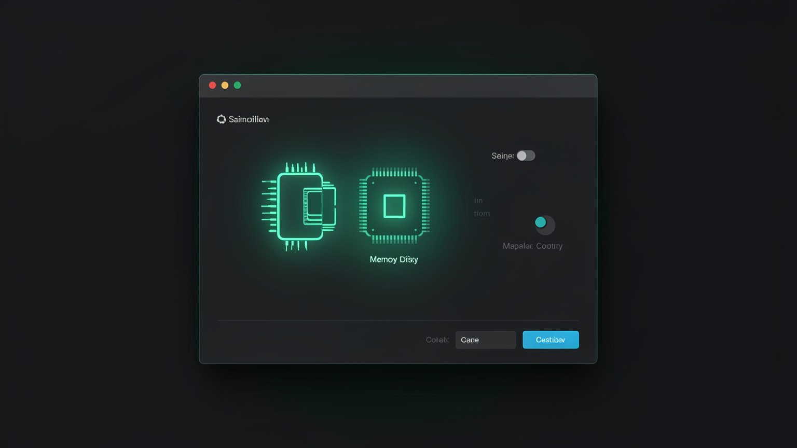
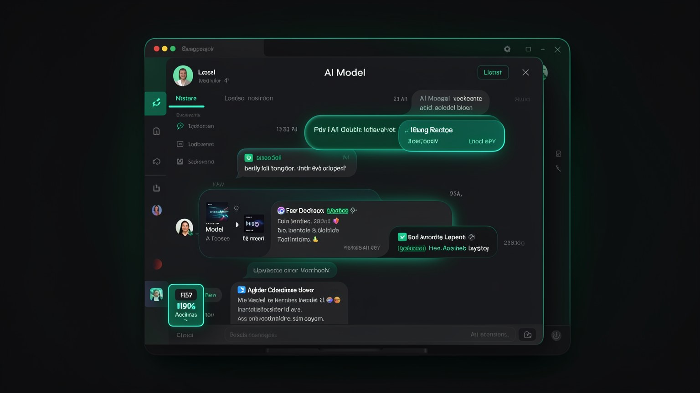
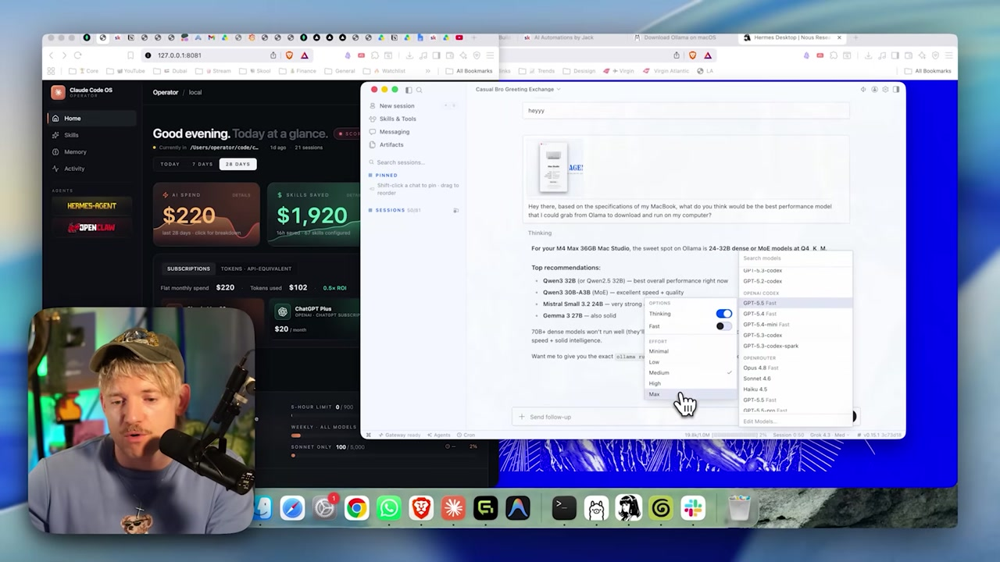

🎚️ Choose the right model for your hardware
Before spending time (and disk space) downloading 18 GB, take 5 minutes to find out what your machine can handle. In this module, you’ll check your own hardware, ask Hermes for a recommendation, understand the effort levels, and apply the golden rule of headroom: never fill RAM to the brim.
🖥️ Get to know your hardware
It all starts with a number: how much memory (RAM) you have. RAM, more than the chip, determines which model fits on your machine. On a Mac, just open the Apple menu → "About This Mac" and read the memory and chip lines. On Windows, the shortcut is Ctrl+Shift+Esc → “Performance” tab → “Memory”.

New here? "RAM" is the computer’s working memory—the space the model needs to fit into to run quickly. On Macs with Apple chips, memory is "unified," meaning it’s shared between the CPU and GPU; that’s why the single number (e.g., 36 GB) is what matters.
Key concepts
Working memory; it determines which model will fit.
Affects speed; on M-series Macs, memory is unified.
Where to check your chip and memory in seconds.
The model + the context need to fit within this number.
🤝 Ask for a recommendation
You don’t need to memorize any tables. The shortcut is show your hardware to Hermes itself (a screenshot of "About This Mac" is enough) and ask: "Which models run well here?" It compares your RAM with the models' sizes and returns a ready-to-use list.

📊 Real example: M4 Max 36 GB
For a machine with 36 GB, Hermes usually suggests options like these — all open models:
More capable, but heavier.
Fast and balanced (the one in the video).
Lightweight, leaves RAM to spare.
Middle option on the list.
💡 Practical tip
Don’t have Hermes handy? Here’s the rough rule: a quantized q4 model takes up, in GB, about the number of billions of parameters times ~0.6. A "30B" takes around 18 GB—which is why it fits (with room to spare) on a 36 GB machine.
Key concepts
Show the "About" section and let the agent suggest something.
Multiple sizes; you choose based on headroom.
Qwen, Mistral, Gemma — all open weights.
~0.6 GB per billion in q4 — a back-of-the-envelope estimate.
🎚️ Effort levels
Choosing the model is only half the story. Hermes’s selector still lets you adjust how much effort it puts in each response—from Minimal a Max — beyond two toggles: Thinking (think longer before responding) and Fast (prioritize speed).

Minimal / Low / Fast
Faster responses, uses less. Good for simple tasks and keeping the machine cool.
Medium
The everyday balance—good quality without taking too long.
High / Max / Thinking
Maximum reasoning for difficult problems. Takes longer and puts more load on the machine.
New here? "Effort" doesn’t switch the model—it changes how much it "tries" before responding. "Thinking" is the mode where the model reasons step by step (that "Thought for X seconds" you see afterward). "Fast" is the opposite: it cuts out the reasoning to respond right away.
Key concepts
Minimal → Max, the depth of the response.
Thinks more before answering.
Prioritizes speed over depth.
Fine-tune it without having to download another one.
⚖️ The headroom rule
Here's the golden rule of this module: leave some RAM headroom. The model needs to fit in memory with room left over for the operating system, browser, and everything else. Filling RAM to the brim makes the computer "swap" to disk, and everything slows down — including the model.
On the left, an ~18 GB model on a 36 GB machine leaves room to spare to the system—everything flies. On the right, a model that’s too large fills up RAM, forces disk use (swap), and everything slows down. That’s why you should leave memory to spare.
✓ Fits with plenty of room
- ✓The model + context take up much less than the total RAM.
- ✓Leaves memory for the system and open apps.
- ✓Fast responses, responsive machine.
- ✓You can increase the context window (e.g., 64k) without slowing things down.
✗ Runs out of memory
- ✗The model nearly fills all available RAM.
- ✗The system starts using disk (swap) as memory.
- ✗Slow responses, and the whole machine bogs down.
- ✗Loading the context may simply not fit.
The right method is inexpensive: download → test → delete. Since usage is free, try a model, see whether your machine can handle it comfortably, and if you don't like it, delete it. Exploring costs nothing — just download time.
⌨️ Copy-run: view and delete models
Objective: list what you’ve already downloaded and remove a model that didn’t work out, freeing up disk space and RAM.
# 1) ver tudo que esta no disco
ollama list
# 2) apagar um modelo que voce nao vai usar
ollama rm <modelo>
# ex.: ollama rm gemma3:27bHow to verify: run ollama list again — the deleted model disappears from the list. Switch <modelo> by the exact name shown in ollama list.
Key concepts
RAM headroom for the system to breathe.
Using disk as memory — which slows everything down.
The low-cost cycle for exploring models.
Deletes a model and gives the disk space back.
🏃 Fast vs. capable: what is q4_K_M
You’ll see names like qwen3:30b-a3b-q4_K_M and ask what that suffix means. The q4_K_M indicates that the model was quantized: compressed to use less memory, trading a tiny bit of precision for a lot less weight.
New here? "Quantize" means storing the model’s internal numbers with fewer decimal places—instead of 16 bits per value, it uses 4 bits ("q4"). The model gets much smaller, and in practice, quality barely drops. "K_M" is just the variant of the compression method (a good default balance).
📏 Reading a model name
- •
qwen3— the family (Qwen, version 3). - •
30b— 30 billion parameters (the size of the “brain”). - •
a3b— “active 3B” variant (mixture of experts: runs fast). - •
q4_K_M— quantized to 4 bits: smaller and lighter.
💡 Practical tip
Between two versions of the same model, the quantized version (q4) is almost always the right choice for local use: you can fit a larger model in the same RAM, and the quality difference is small. “fp16” versions (without quantization) are only worthwhile if you truly have memory to spare.
Key concepts
Compress the model to use less RAM.
4-bit, balanced variant—the local default.
“30B” = 30 billion; the size of the brain.
A small quality trade-off for much less overhead.
🎯 Which one to download first
To avoid getting stuck choosing, here’s a concrete recommendation: start with the qwen3:30b-a3b-q4_K_M. It's the video's "fast model" — balanced, quantized, with the a3b variant that makes it fast, and it fits comfortably on machines with ~32 GB or more. You can switch later; the important thing is to get a first model running.
🧩 The plan in one sentence
Check your RAM → ask for a recommendation → choose a model that fits comfortably → download the qwen3:30b-a3b-q4_K_M first. In module 2.3, you download it and actually chat with it.
The agent model (with 64k context) comes in module 2.4—this one requires extra preparation.
The honest shortcut: there's no universal "best model." The best one is the one that comfortably fits on YOUR machine and responds quickly enough that you don't give up. Start with the recommended one and adjust over time.
Key concepts
qwen3:30b-a3b-q4_K_M — balanced and fast.
~18 GB on a ~32 GB+ machine.
Start simple; adjust later.
The 64k are from module 2.4.
Optional self-check: What’s the best model choice for your machine?
🎯 Module summary
Next module:
2.3 — Download and chat with your 1st model